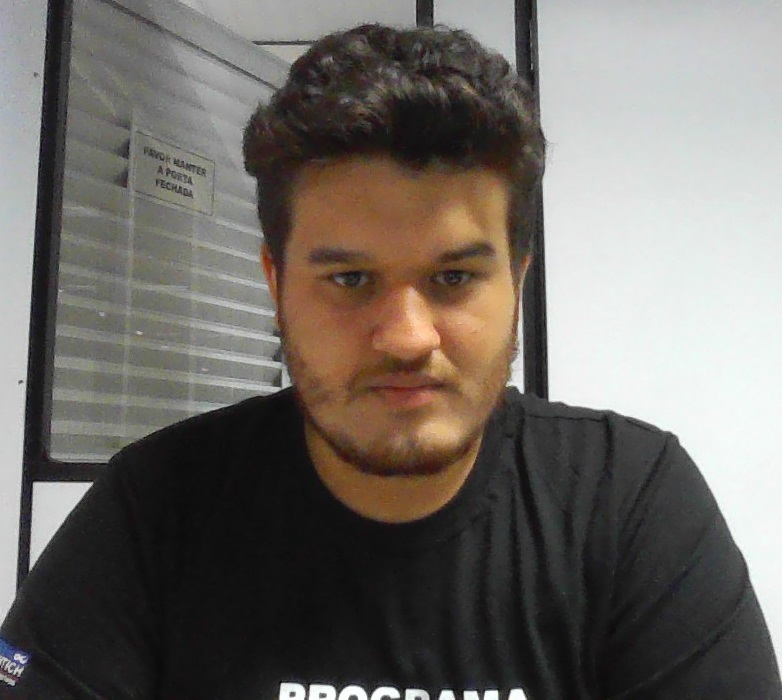
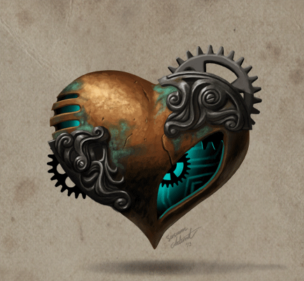

Vinicius Porto Ribeiro
Desenvolvedor Frontend Junior
-

- 
Sobre
Oi! meu nome é Vinicius Ribeiro, seja bem-vindo(a)!
Sou uma pessoa apaixonada pela tecnologia desde a infancia. Sempre tive o sonho de trabalhar com programação e atualmente estou colocando este sonho em prática estudando HTML, CSS e JavaScript. Gosto muito de café, e meus principais hobbies são jogar jogos retrô, ver filmes e séries.